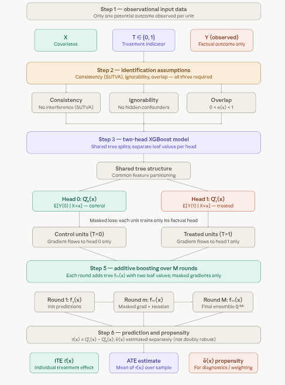
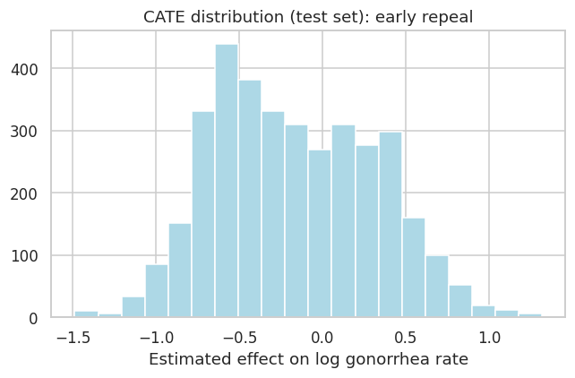
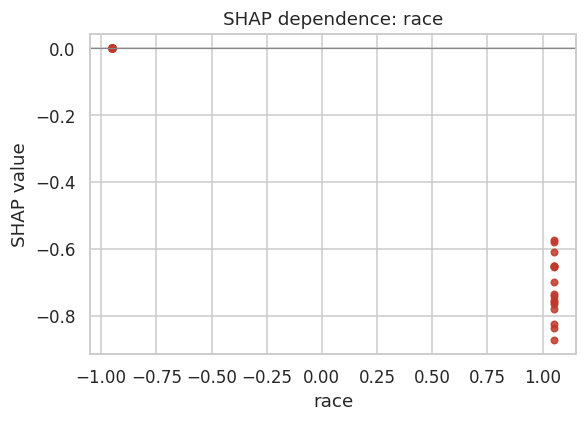
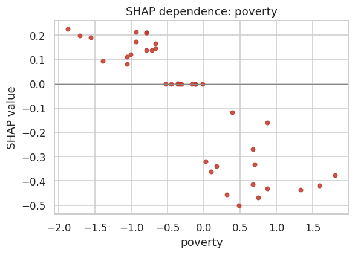
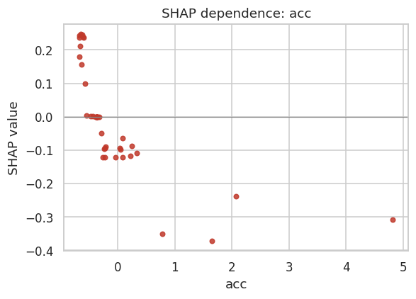
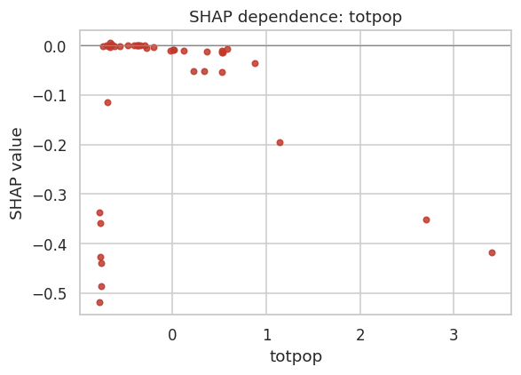
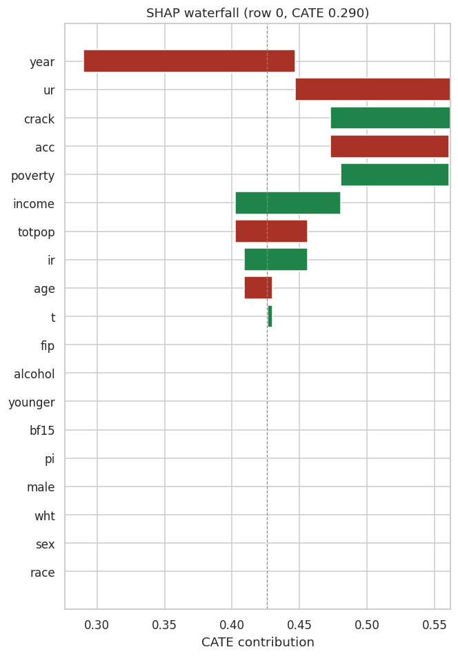
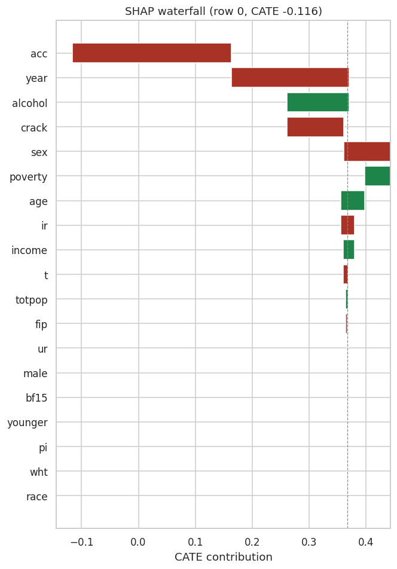

1.6 The Boosted Model of Causal Inference (causalXGBoost)
Overview
C-XGBoost is a tree-boosting method for estimating individual and average treatment effects from observational data. It belongs to the outcome regression family of causal inference methods — the same conceptual family as TARNet and DragonNet — but replaces neural networks with XGBoost. The result is a model that brings DragonNet-style causal masking to boosted trees, combining the counterfactual reasoning of neural causal models with XGBoost’s well-known strengths on tabular data: robustness to irregular boundaries, excellent calibration on medium-sized datasets, and minimal tuning overhead.
The core idea is simple: train one XGBoost model with two output heads that simultaneously predict potential outcomes under control (\(\hat{Q}_0(x)\)) and treatment (\(\hat{Q}_1(x)\)). The individual treatment effect falls out as their difference.
Causal Setup
C-XGBoost operates within the potential outcomes framework. For each unit \(i\), two potential outcomes exist — \(Y_i(0)\) under control and \(Y_i(1)\) under treatment — but only one is observed:
These are identifiable from observational data \((X, T, Y)\) under three standard assumptions: consistency (SUTVA — no interference between units), ignorability (no unmeasured confounders: \((Y(0), Y(1)) \perp T \mid X\)), and overlap (\(0 < e(x) < 1\), where \(e(x) = P(T=1 \mid X=x)\)). If any of these fail — especially ignorability — the estimates break down.
The Two-Head Architecture
C-XGBoost learns two conditional expectation functions inside a single model:
\[\hat{Q}_0(x) \approx E[Y(0) \mid X = x], \qquad \hat{Q}_1(x) \approx E[Y(1) \mid X = x]\]
The ITE estimate is then:
\[\hat{\tau}(x) = \hat{Q}_1(x) - \hat{Q}_0(x)\]
The heads share tree structure but have separate leaf values. This is the key design choice: shared splits mean the model learns a common feature-space partitioning that generalizes across both heads, so counterfactuals are borrowed from structurally similar units rather than extrapolated blindly.
The Masked Loss
Each training unit contributes gradient signal to only the head that matches its observed treatment assignment:
The intuition: control units (\(t_i = 0\)) teach the \(\hat{Q}_0\) head what \(Y(0)\) looks like as a function of \(X\); treated units (\(t_i = 1\)) teach the \(\hat{Q}_1\) head what \(Y(1)\) looks like. Because the splits are shared, information flows across both heads — a treated unit in region \(\mathcal{R}\) of covariate space indirectly informs the \(\hat{Q}_0\) prediction for control units in the same region, and vice versa.
How Boosting Works
XGBoost builds the two-output predictor additively over \(M\) rounds:
\[\hat{q}^{(M)}(x) = \sum_{m=1}^M f_m(x)\]
where each \(f_m\) is a tree that outputs two numbers per leaf — one for each head. At each round \(m\):
Compute current predictions \(\hat{q}^{(m-1)}(x_i)\) for all units.
Compute masked gradients and Hessians — only the factual head gets non-zero curvature:
Fit a new tree \(f_m\) that minimizes the standard XGBoost second-order objective jointly across both heads.
Update predictions: \(\hat{q}^{(m)} = \hat{q}^{(m-1)} + \eta\, f_m(x)\), where \(\eta\) is the learning rate.
The shared structure + separate leaf values lets the model capture rich interactions while still learning distinct counterfactual surfaces.
Propensity Score
C-XGBoost separately fits a propensity model \(\hat{e}(x) = \widehat{P}(T=1 \mid X=x)\) — typically a random forest. Importantly, this propensity score is not integrated into the XGBoost training loss (unlike DragonNet), which means the model is not doubly robust: if the outcome model is misspecified, the propensity estimate provides no correction. The propensity is returned purely for downstream use — overlap diagnostics, inverse probability weighting, or subgroup analysis.
Prediction and Evaluation
For a new unit \(x\), a single forward pass returns \(\hat{Q}_0(x)\), \(\hat{Q}_1(x)\), \(\hat{e}(x)\), and \(\hat{\tau}(x) = \hat{Q}_1(x) - \hat{Q}_0(x)\). Two standard evaluation metrics apply:
ATE error — absolute difference between the true and estimated population average effect.
PEHE (Precision in Estimation of Heterogeneous Effects) — mean squared error over individual effects:
PEHE requires knowledge of both potential outcomes, so it can only be computed when both potential outcomes are known, as in a simulation. On observational data such as the abortion-repeal study later in this notebook, only the factual outcome is observed, so evaluation uses the sample average treatment effect, factual outcome fit, and overlap checks.
Limitations
Not doubly robust. Propensity is estimated but not used in training, so the model has no safety net against outcome model misspecification.
Binary outcome clipping. The regression loss does not constrain outputs to \([0, 1]\); post-hoc clipping or calibration may be needed.
Classical assumptions required. Hidden confounding, SUTVA violations, or lack of overlap each break identification.
Two heads only. The current architecture supports binary treatment. Multi-arm extensions would require additional heads and a revised masking scheme.

Causal XGBoost pipeline
A few things worth emphasizing from the pipeline:
Step 3 is the architectural heart. The shared tree structure means splits are chosen to explain variation in both\(Y(0)\) and \(Y(1)\) simultaneously. A region of covariate space where treated and control units are interleaved will push the trees to carve boundaries that serve both heads — effectively using treated units to regularize the counterfactual surface of control units, and vice versa.
Step 4 (masked loss) is what makes this causal rather than predictive. A standard multi-output XGBoost regression would naively assign \(Y_i\) to both heads, which would corrupt the counterfactual estimates. The mask \(m_i = (1-t_i,\, t_i)\) ensures only the factual head receives gradient signal, keeping each head honest about what it actually observed.
Step 6’s propensity caveat matters practically. Because \(\hat{e}(x)\) is not wired into the training objective, severe overlap violations — regions where nearly all units are treated or nearly all are control — will degrade the counterfactual head for the sparse group, and no propensity reweighting inside the loss will correct for it. Checking the propensity score distribution before trusting CATE estimates in low-overlap regions is essential.
Why It Works Well on Tabular Causal Data
XGBoost excels at nonlinearities, interactions, and irregular boundaries (classic strengths on tabular data).
The masking + shared splits give the same representational power as neural causal models but with far better calibration and robustness on medium-sized tabular datasets.
Conceptually: “DragonNet-style causal masking, but with boosted trees instead of neural nets.”
Implementation in Python
PyCausalML provides C-XGBoost as the class CXGBoost. Create a model with CXGBoost(n_estimators, max_depth, learner, random_state). learner="xgb" uses XGBoost when it is installed; otherwise use learner="gbr" for scikit-learn gradient boosting.
fit(X, treatment, y, feature_names=None) trains on a numeric covariate matrix, a binary treatment, and the observed outcome.
predict(X) returns a NumPy array of conditional average treatment effects.
mu0_ and mu1_ are the outcome models for the control and treated arms. Call predict on each for potential-outcome predictions.
propensity_ is a logistic regression for \(P(T=1 \mid X)\). Scores are propensity_.predict_proba(X)[:, 1].
feature_importance() returns mean importance across the treatment-effect models.
explain and plot_shap explain the CATE prediction.
Setup
This notebook fits CXGBoost from PyCausalML (pycausalml.tree_based_models).
fit(X, treatment, y) returns the fitted estimator. predict returns a NumPy array of conditional average treatment effects. A fitted model also exposes explain and plot_shap.
Install the package from this repository, with the plotting and boosting extras, plus the causaldata package that supplies the abortion dataset.
learner='xgb' uses XGBoost. The conditional average treatment effect is the boosted X-learner prediction.
Code
import subprocessimport sysfrom pathlib import Pathdef _repo_root() -> Path: here = Path.cwd().resolve()for cand in [here, *here.parents]:if (cand /"pyproject.toml").is_file() and (cand /"src"/"pycausalml").is_dir():return candraiseFileNotFoundError("PyCausalML repository was not found. Run this notebook from the repository." )root = _repo_root()subprocess.check_call([ sys.executable, "-m", "pip", "install", "-q", "-e", f"{root}[plot,boost,shap]", "causaldata", "statsmodels",])print("PyCausalML ready.")
PyCausalML ready.
Code
%matplotlib inlineimport matplotlib.pyplot as pltimport numpy as npimport pandas as pdimport seaborn as snsfrom causaldata import abortionfrom pycausalml import CXGBoostsns.set_theme(style="whitegrid")plt.rcParams["figure.dpi"] =110print("Imported PyCausalML")
CXGBoost fits a boosted X-learner. With learner="xgb" it uses XGBoost for the outcome models. predict returns the conditional average treatment effect. Potential-outcome predictions are available from mu0_ and mu1_, and the propensity model is the logistic regression stored on propensity_.
Constructor arguments:
n_estimators: number of boosting rounds (default 60).
max_depth: maximum tree depth (default 2).
learner: "xgb" for XGBoost, or "gbr" for scikit-learn gradient boosting.
random_state: seed for the boosters and the propensity model.
fit(X, treatment, y, feature_names=None) takes a numeric covariate matrix, a binary treatment, and the observed outcome.
model = CXGBoost(n_estimators=80, max_depth=3, learner="xgb", random_state=42)model.fit(X, treatment, y, feature_names=feature_names)tau_hat = model.predict(X_new)
<pycausalml.tree_based_models.estimators.CXGBoost at 0x7faeab415910>
Predict and evaluate (synthetic data)
predict() returns the CATE. Potential outcomes are mu0_.predict(X) and mu1_.predict(X). When both potential outcomes are known, PEHE is the root mean squared error of the CATE, and the ATE error is the absolute error of the average effect.
print("CXGBoost")print(" mean training CATE:", round(float(model_syn.predict(trainX).mean()), 3))imp_syn = model_syn.feature_importance()print(" largest importance:", round(float(imp_syn.max()), 3))
CXGBoost
mean training CATE: -0.102
largest importance: 0.448
True ATE : -0.031
{'PEHE': 0.296, 'ATE_error': 0.105, 'ATE_hat': -0.137}
Use Case: Causal XGBoost on the Abortion Dataset
We use the abortion dataset from the Python causaldata package. It records the effect of abortion legalization (early repeal) on gonorrhea incidence among 15–19 year olds, a proxy for risky sexual behavior. The goal is to estimate how that policy effect varies with state and demographic covariates.
Data
The abortion dataset contains state-year observations on gonorrhea rates among 15–19 year olds, with a binary indicator for early repeal of abortion prohibition. This dataset is commonly used to study the effects of abortion legalization on risky sexual behavior among teenagers, proxied by gonorrhea rates.
This dataset is commonly used to study the causal effects of abortion legalization policies (specifically, early repeal of abortion prohibitions in certain U.S. states) on risky sexual behavior among teenagers. Risky behavior is proxied by the incidence of gonorrhea (a sexually transmitted infection) among 15–19 year olds. The idea is that access to abortion might influence sexual decision-making or risk-taking behavior in this age group.
Here are the most important columns:
fip — State FIPS code (numeric identifier for each U.S. state)
age — Age in years (focused on 15–19 year olds)
race — Race: 1 = white, 2 = black (or similar coding)
year — Calendar year
t — A rescaled time variable (often centered around policy change for DiD)
sex — Sex: 1 = male, 2 = female
totpop — Total population (state-level)
ir — Incarcerated males per 100,000 (proxy for criminal justice environment)
crack — Crack cocaine index (proxy for drug epidemic intensity)
alcohol — Alcohol consumption per capita
income — Real income per capita
ur — State unemployment rate
poverty — Poverty rate
repeal — Treatment indicator: 1 = state had an early repeal of abortion prohibition (treatment group), 0 = otherwise (control group). This is the main policy/treatment variable.
pi — Parental involvement law in effect (another policy control)
bf15 — Indicator: Is a black female in the 15–19 age group (useful for subgroup analysis)
Load Data
The outcome variable is typically lnr (logged gonorrhea rate per 100,000 population among 15–19 year olds), which measures the logged incidence of gonorrhea as a proxy for risky sexual behavior.
Abortion dataset loaded. Columns: ['fip', 'age', 'race', 'year', 'sex', 'totpop', 'ir', 'crack', 'alcohol', 'income', 'ur', 'poverty', 'repeal', 'acc', 'wht', 'male', 'lnr', 't', 'younger', 'fa', 'pi', 'bf15']
::
Number of observations - 19584
Number of variables - 22
Variables name definitions::
fip - State FIPS code
age - Age in years
race - Race: 1 = white, 2 = black
year - Year
t - Year but on a different scale
sex - Sex: 1 = male, 2 = female
totpop - Total population
ir - Incarcerated Males per 100,000
crack - Crack index
alcohol - Alcohol consumption per capita
income - Real income per capita
ur - State unemployment rate
poverty - Poverty rate
repeal - In a state with an early repeal of abortion prohibition
acc - AIDS mortality per 100,000 cumulative in t, t-1, t-2, t-3
wht - White Indicator
male - Male Indicator
lnr - Logged gonnorhea cases per 100,000 in 15-19 year olds
younger - From the younger group
fa - State-younger interaction
pi - Parental involvement law in effect
bf15 - Is a black female in the 15-19 age group
This data looks at the effect of abortion legalization on the incidence of gonnorhea among 15-19 year olds, as a measure of risky behavior. Treatment is whether abortion is legalized at the time that the eventual 15-19 year olds are born. This data is used in the Difference-in-Differences chapter of Causal Inference: The Mixtape by Cunningham.
Cunningham, Scott, and Christopher Cornwell. 2013. “The Long-Run Effect of Abortion on Sexually Transmitted Infections.” American Law and Economics Review 15 (1): 381–407.
fip age race year sex totpop ir crack alcohol income \
0 1 30 2 1985 1 78805 371.475800 0.217438 1.9 11566.0
1 1 15 1 1985 2 224003 51.389252 0.217438 1.9 11566.0
2 1 20 2 1985 2 94113 390.875671 0.217438 1.9 11566.0
3 1 20 1 1985 1 252076 100.836800 0.217438 1.9 11566.0
4 1 20 2 1985 1 94113 390.875671 0.217438 1.9 11566.0
... repeal acc wht male lnr t younger fa pi bf15
0 ... 0 0.679504 0 1 7.880880 1 0 NaN 0 0
1 ... 0 0.679504 1 0 6.362165 1 1 1.0 0 0
2 ... 0 0.679504 0 0 8.917793 1 0 NaN 0 0
3 ... 0 0.679504 1 1 5.906995 1 0 NaN 0 0
4 ... 0 0.679504 0 1 9.072009 1 0 NaN 0 0
[5 rows x 22 columns]
repeal
0 17664
1 1920
Name: count, dtype: int64
Explore the sample
Treatment is repeal (1 = early repeal). The outcome used below is lnr, the logged gonorrhea rate. The plots compare the outcome and two covariates across repeal status.
The outcome is lnr. The treatment is repeal. Rows with a missing outcome are dropped. fa is missing outside the younger age group, so that column is dropped instead of deleting those rows. Remaining covariates are standardized so the logistic propensity model is on a comparable scale. The split is 80% training and 20% test.
Code
from sklearn.preprocessing import StandardScalerfeature_names = [col for col in abortion_df.columns if col notin ("lnr", "repeal")]work = abortion_df.copy()missing_cols = [col for col in feature_names if work[col].isna().any()]feature_names = [col for col in feature_names if col notin missing_cols]work = work.dropna(subset=["lnr", "repeal", *feature_names])X_raw = work[feature_names].apply(pd.to_numeric, errors="coerce").to_numpy(dtype=float)keep = X_raw.var(axis=0) >1e-10X_raw = X_raw[:, keep]feature_names = [name for name, flag inzip(feature_names, keep) if flag]scaler = StandardScaler()X = scaler.fit_transform(X_raw)Y = work["lnr"].to_numpy(dtype=float)W = work["repeal"].to_numpy(dtype=int)print("Dropped columns with missing values:", missing_cols)print("Covariates used:", feature_names)print("N =", len(Y), " treated =", int(W.sum()), " control =", int((W ==0).sum()))rng = np.random.default_rng(42)n =len(Y)train_idx = rng.choice(n, size=round(0.8* n), replace=False)test_idx = np.setdiff1d(np.arange(n), train_idx)X_train, X_test = X[train_idx], X[test_idx]Y_train, Y_test = Y[train_idx], Y[test_idx]W_train, W_test = W[train_idx], W[test_idx]print("Training set size:", len(Y_train))print("Test set size:", len(Y_test))print("Training treated share:", round(float(W_train.mean()), 3))print("Test treated share:", round(float(W_test.mean()), 3))
Dropped columns with missing values: ['fa']
Covariates used: ['fip', 'age', 'race', 'year', 'sex', 'totpop', 'ir', 'crack', 'alcohol', 'income', 'ur', 'poverty', 'acc', 'wht', 'male', 't', 'younger', 'pi', 'bf15']
N = 17921 treated = 1854 control = 16067
Training set size: 14337
Test set size: 3584
Training treated share: 0.103
Test treated share: 0.104
Train Causal XGBoost on Training Data
CXGBoost fits boosted outcome models for each treatment arm and a logistic propensity model.
n_estimators and max_depth control the boosters.
learner="xgb" selects XGBoost.
fit(X, treatment, y, feature_names=None) trains on the covariate matrix, binary treatment, and observed outcome.
predict(X) returns the CATE.
feature_importance() ranks covariates for the treatment-effect models.
Propensity scores are propensity_.predict_proba(X)[:, 1].
The sample ATE on the training set is the mean of the predicted conditional effects. predict() returns one CATE per row.
Code
cate_train = cx_model.predict(X_train)print("Training sample ATE (mean CATE):", round(float(cate_train.mean()), 4))
Training sample ATE (mean CATE): -0.1655
The ATE is the average of the predicted conditional effects. Here that average is the estimated effect of early repeal on the log gonorrhea rate among 15–19 year olds.
Prediction
Code
cate_test_pred = cx_model.predict(X_test)fig, ax = plt.subplots(figsize=(6, 4))ax.hist(cate_test_pred, bins=20, color="lightblue", edgecolor="white")ax.set_title("CATE distribution (test set): early repeal")ax.set_xlabel("Estimated effect on log gonorrhea rate")fig.tight_layout()plt.show()

CATE summary and sample ATE
C-XGBoost does not implement RATE/AUTOC; the causal-forest notebook shows that ranking metric. Below we summarize CATE heterogeneity on the test set and the sample ATE.
Code
print(f"CATE on test set: mean = {cate_test_pred.mean():.3f}, sd = {cate_test_pred.std():.3f}")print("Sample ATE (test):", round(float(cate_test_pred.mean()), 4))print("Range:", round(float(cate_test_pred.min()), 3), "to", round(float(cate_test_pred.max()), 3))test_raw = pd.DataFrame(X_raw[test_idx], columns=feature_names)test_raw["cate"] = cate_test_predfor col in ("sex", "bf15"):if col in test_raw.columns:print(f"\nMean CATE by {col}:")print(test_raw.groupby(col)["cate"].agg(["mean", "std", "count"]).round(3))
CATE on test set: mean = -0.169, sd = 0.482
Sample ATE (test): -0.1687
Range: -1.488 to 1.319
Mean CATE by sex:
mean std count
sex
1.0 -0.140 0.484 1832
2.0 -0.199 0.477 1752
Mean CATE by bf15:
mean std count
bf15
0.0 -0.155 0.483 3457
1.0 -0.533 0.225 127
Evaluation
Both potential outcomes are not observed here, so PEHE is not identified. What can be checked is how well the arm-specific outcome models predict the factual outcome, and how wide the estimated effects are. The synthetic example above is where PEHE and ATE error are reported, because both potential outcomes were generated.
Each panel shows how the SHAP value for the conditional effect changes with one covariate.
Code
top_features =list(np.array(sv.feature_names)[np.argsort(sv.importance())[::-1][:4]])for name in top_features: sv.plot_dependence(name) plt.show()




Decompose single predictions
The waterfall plot shows how each feature moves the predicted conditional effect for one observation away from the baseline.
Code
sv.plot_waterfall(row=0)plt.show()

Averaged SHAP values (importance by subgroup)
The bar chart above averages absolute SHAP values over the explained rows. The waterfall below is one explained row with sex == 2 (female), when that row is in the explained sample.
Code
sex_col = feature_names.index("sex")female_idx = np.flatnonzero(np.isclose(X_raw[train_idx, sex_col], 2))sv_female = cx_model.explain( X_train[female_idx[:30]], background=X_train, max_samples=30, random_state=42,)print("Waterfall for a training row with sex =", X_raw[train_idx[female_idx[0]], sex_col])sv_female.plot_waterfall(row=0)plt.show()
Waterfall for a training row with sex = 2.0

Propensity scores
C-XGBoost fits a separate logistic propensity model and stores it on propensity_. These scores are not used in the outcome loss. They are useful for overlap diagnostics or weighting.
C-XGBoost estimates heterogeneous treatment effects with a boosted X-learner. Separate outcome models predict the potential outcomes under control and treatment, a second pair of boosters fits the imputed treatment effects, and a logistic propensity model combines the two effect surfaces. predict() returns the conditional average treatment effect. feature_importance() ranks covariates in the effect models, and propensity_ supplies overlap diagnostics.
This tutorial fit CXGBoost on a simulation, where both potential outcomes are known, and on the abortion dataset from causaldata. On that study the outcome is the logged gonorrhea rate (lnr) and the treatment is early repeal (repeal). The observational example reports the sample average treatment effect, factual outcome fit, covariate importance, SHAP attributions, and propensity scores.
Further reading below covers the related literature.
Resources
C-XGBoost: two-head XGBoost with treatment masking for causal inference. The Python class is CXGBoost in PyCausalML.
DragonNet-style outcome regression: Shi et al., “Adapting Neural Networks for the Estimation of Treatment Effects” (2019).
Athey, Tibshirani, and Wager. “Generalized Random Forests.” Annals of Statistics, 47(2), 2019.